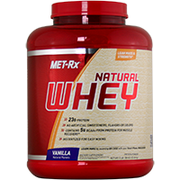

Información de Natural Whey :
Sabemos que su salud es muy importante para usted, y aquí en MET-Rx nos esforzamos para dar
productos que satisfagan sus necesidades individuales. Entendemos que usted no está buscando edulcorantes
artificiales, sabores y colores. También entendemos que no quiere rellenos en sus proteínas. Es por eso
que los llevamos a cabo y traído a usted un producto diferente a cualquier otro. Lo llamamos MET-Rx Natural Whey.
MET-Rx Natural Whey utiliza procesos especializados de filtración que reducen el colesterol total, grasa saturada,
la lactosa y los hidratos de carbono, mientras concentra las proteínas naturales.
Utilizamos técnicas de fabricación con tecnología de última generación para ofrecer una mezcla de proteína de vanguardia
que es a la vez sana y científicamente avanzada que proporciona una ultra-filtrada proteína de suero de leche de alta
calidad concentrado.
¿Qué hace que Natural Whey valga la pena?
MET-Rx Natural Whey proporciona fuentes de proteínas de suero de leche estándar de oro
incluyendo ultrafiltrado de suero concentrado de proteína. Estos procesos de filtración especializados
reducen el colesterol total, grasa saturada, lactosa y carbohidratos, mientras concentra
las proteínas naturales.
Naturalmente contiene activos péptidos de proteína de suero y microfracciones incluyendo: Beta-lactoglobulina,
alfa-lactoalbúmina, Glicomacropéptidos, lactoferrina, y otros componentes bioactivos.
Proteínas de suero instantanea para facilitar la mezcla y dispersión completa en líquido.
Rápida absorción de proteína de suero de fusión a la entrega de aminoácidos a los músculos de velocidad inmediatamente
después de los entrenamientos, para ayudar a estimular la síntesis de proteína muscular.
Contiene aminoácidos naturales de cadena ramificada. Cada porción contiene aproximadamente 5 g de los siguientes aminoácidos
de cadena ramificada de proteína, que por lo general proporciona : isoleucina 1,4 g, leucina 2,4 g, valina 1,3 g

{kind=link}
{kind=link}
{kind=link}